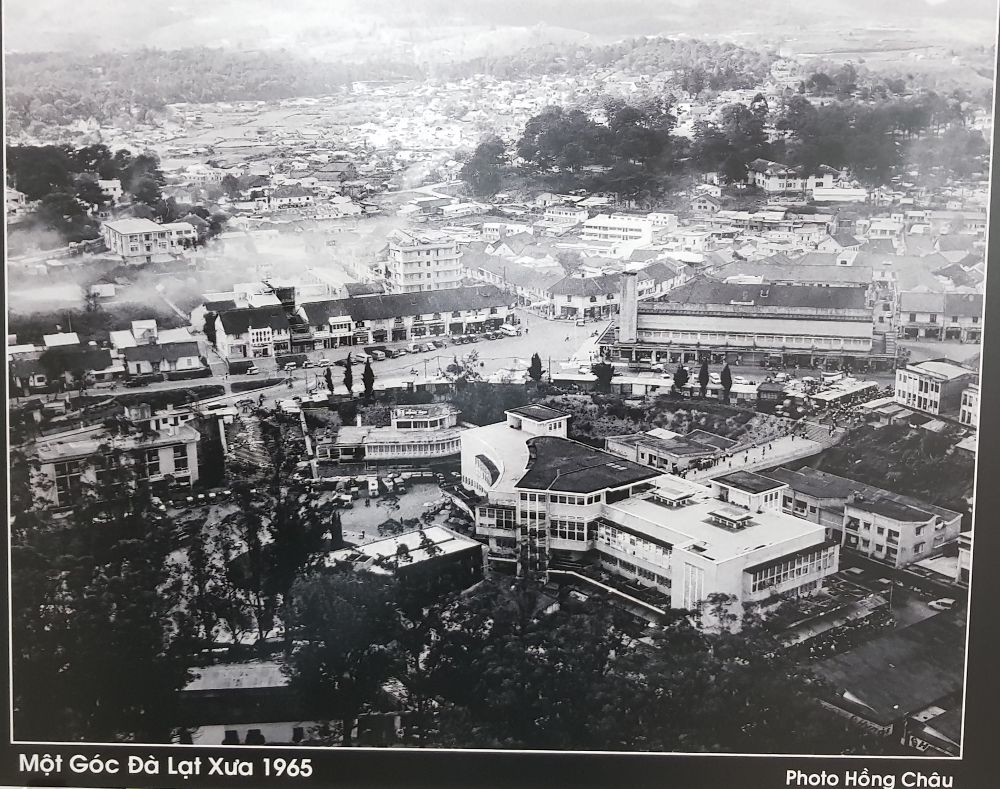
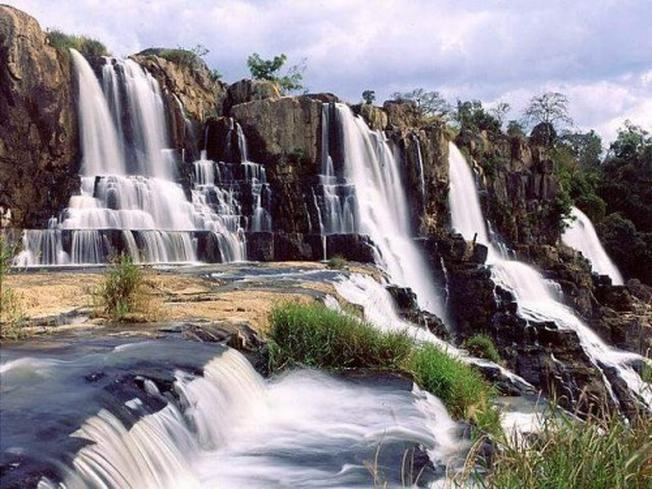
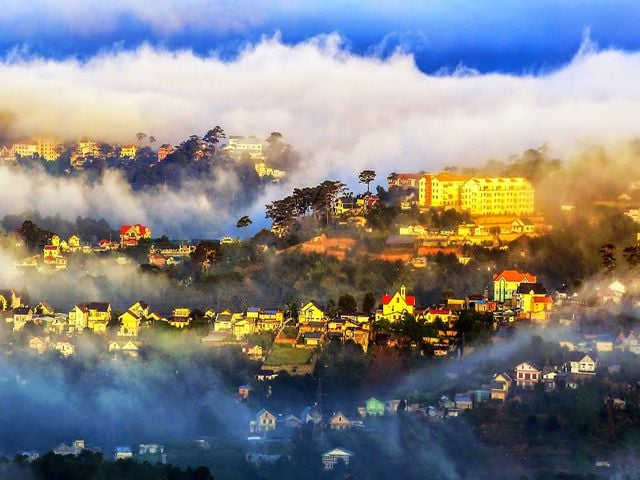
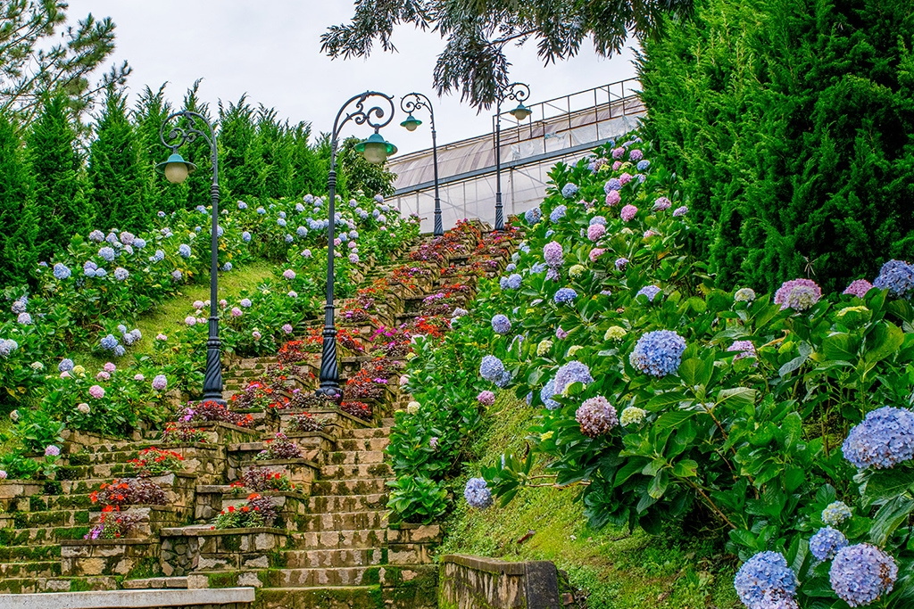
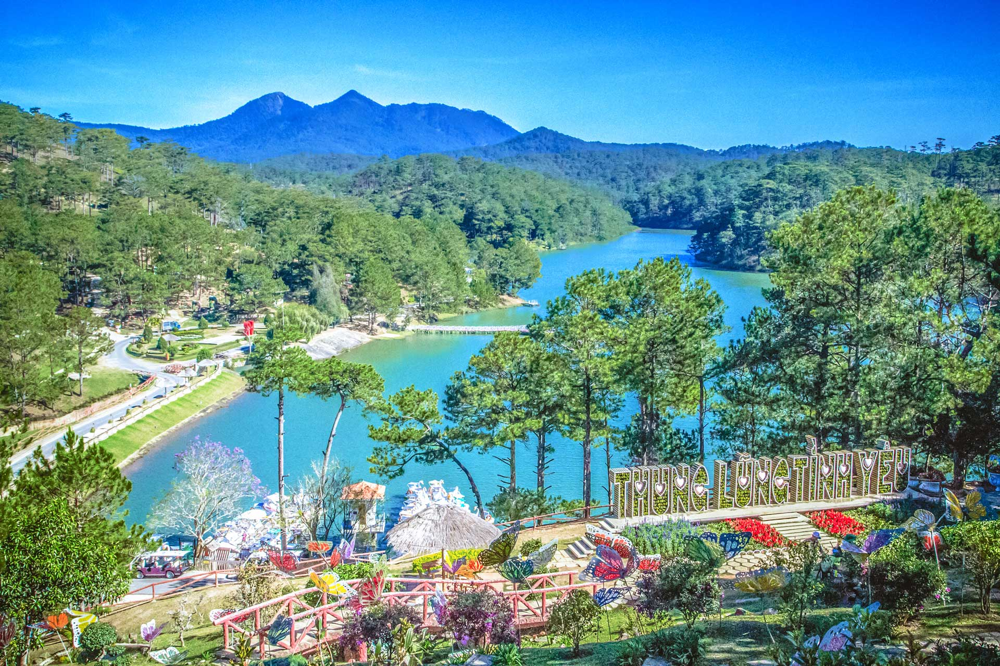
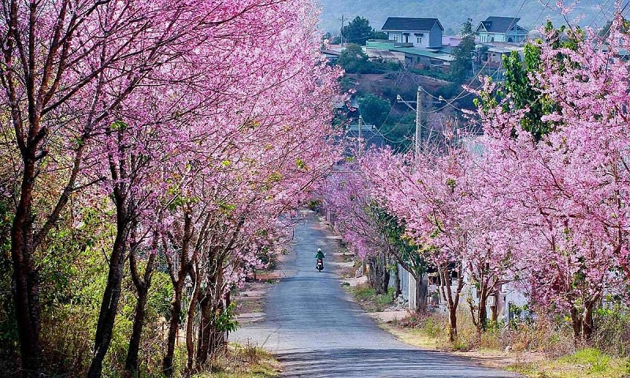

Đà Lạt – xứ sở của tình yêu, của muôn hoa ngọt ngào và thơ mộng. Suốt trăm năm trường tồn, Đà Lạt vẫn yêu kiều, duyên dáng đầy khác biệt. Cảnh và tình nơi đây lắng lại trong tâm hồn người bao cảm xúc nồng ấm. Những dư vị siêu lòng của xứ sở sương mù như tan chảy cho những ai đến tham quan.

LỊCH SỬ HÌNH THÀNH
Đà Lạt nằm trên Cao nguyên Lâm Viên, được phát hiện bởi bác sĩ Alexandre Yersin vào cuối thế kỷ XIX.
Ngày 21/06/1893, lúc 15 giờ 30 phút, Yersin đặt chân lên vùng đất này và nhận thấy tiềm năng phát triển từ thiên nhiên ưu đãi. Ông bắt tay vào xây dựng thành phố, đánh dấu cột mốc quan trọng cho sự hình thành của một địa danh du lịch nổi tiếng.
Nhờ vào sự phát triển này, Đà Lạt đã trở nên nổi tiếng không chỉ trong nước mà còn vươn ra tầm quốc tế. Thành phố trở thành nguồn cảm hứng cho nhiều thi nhạc sĩ và được đưa vào từ điển bách khoa của nhiều quốc gia trên thế giới.
Ngày nay, Đà Lạt là trung tâm hành chính của tỉnh Lâm Đồng, nơi đặt trụ sở của các cơ quan hành chính nhà nước cấp tỉnh.

Chân dung của Yersin
NGUỒN GỐC TÊN GỌI "ĐÀ LẠT"
Tên gọi “Đà Lạt” bắt nguồn từ dòng suối nhỏ Đạ Lạch, đoạn suối Cam Ly chảy qua khu vực thành phố theo hướng Bắc – Nam. Theo ngôn ngữ của người Thượng, “Đà Lạt” có nghĩa là “nước của người Lát” hoặc “suối của người Lát”.
Những người đầu tiên xây dựng thành phố đã sáng tạo từ “DALAT” dựa trên câu ngôn ngữ La Tinh “Dat Aliis Laetitiam Aliis Temperiem”. Mang ý nghĩa “Cho người này niềm vui, cho kẻ khác sức khỏe”. Điều này thể hiện mong muốn của người Pháp trong việc xây dựng Đà Lạt thành địa điểm vui chơi và nghỉ dưỡng lý tưởng, như một “quê nhà” cho binh lính và quan chức trong thời kỳ Pháp thuộc.

Đà Lạt – thành phố với nhiều mệnh danh

‘’Thành phố mộng mơ’’
Với những cảnh đẹp hữu tình, đặc biệt là khung cảnh núi rừng và những căn biệt thự cổ mờ ảo trong màn sương, Đà Lạt khiến bao người say mê.

‘’Thành phố ngàn hoa’’
Khắp nơi trong thành phố, du khách có thể bắt gặp những vườn hoa rực rỡ sắc màu.

‘’Thành phố Tình Yêu’’
Đà Lạt là điểm đến lý tưởng cho các cặp đôi chụp ảnh cưới, hưởng tuần trăng mật hay tổ chức tiệc cưới.

‘’Xứ hoa anh đào’’
Từ tháng 1 đến tháng 3, du khách đến Đà Lạt sẽ được chiêm ngưỡng những cung đường hoa Mai Anh Đào nở rộ tuyệt đẹp .